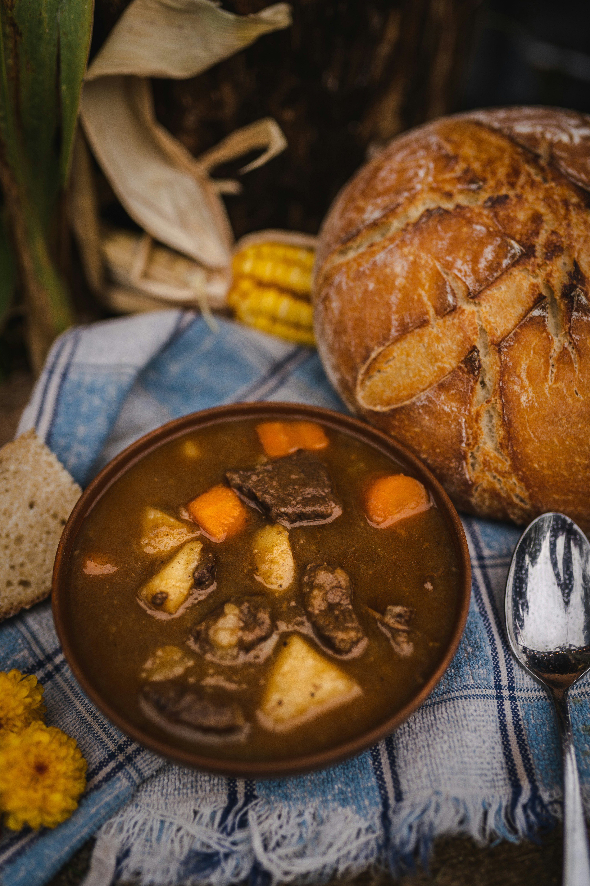

Home
Beef Stew

Hearty beef stew with carrots and potatoes
This recipes will instruct you on how to creat a hearty beef stew your whole family will enjoy. It has taken me several tries to get to where this recipe is now and I am quite happy with where it's at now. This stew consists of nice pieces of chuck roast beef, diced onions, diced garlic, sliced carrots and diced russet potatoes but you are more than welcome to add other ingredients you wish but for the sake of this recipes these are what I have been using. In this recipe I use a slow cooker to make sure the chuck roast cut get to cook low and slow for long enough the the meat just melts in you mouth once finished.
Ingredients
- 1 tablespoon olive oil
- 1 pound chuck roast, cut into 1/2-inch cubes
- 1 large white onion, diced
- 4 cloves garlic, peeled and diced
- 4 medium carrots, sliced in 1/4-inch rounds
- 5 large russet potatoes, peeled and diced into 1/2-inch cubes
- 1/4 cup chili sauce
- 1/4 cup ketchup
- 3 tablespoons Worcester Sauce
- 3 tablespoons low sodium soy sauce
- 2 tablespoons tomato paste
- 8 cups beef broth
Steps
- Heat tablespoon olive oil in a medium saute pan on medium-high heat
- Add in beef chunks and cook until brown on all sides. Do not cook all the way through. Should take around 7-8 minutes.
- Add in diced onions and cook until translucent. Around 5 minutes.
- Add in diced garlic and cook until fragrant. Around 1-2 minutes.
- In a slow cooker add in 7 1/2 cups beef broth, chili sauce, tomato paste, ketchup, worcester sauce, and soy sauce.
- Add in beef, onions and garlic that have been cooking in the medium pan into the slow cooker. Add the remaining 1/2 cup of beef broth into the medium pan and deglaze the contents and add that to the slow cooker as well. On the slow cooker set the temperature to low and the time to 8-10 hours. The longer it cooks the more tender the meat. Make sure you dont set it for too long though or the meat will have a weird texture. I set mine to a max of 10 hours.
- When the slow cooker has 4 hours left add in your sliced carrots. Stir ingredients and replace lid
- When the slow cooker has 2 1/2 hours left add in your diced potatoes
- Serve in a bowl with a nice side of toasted bread and enjoy!